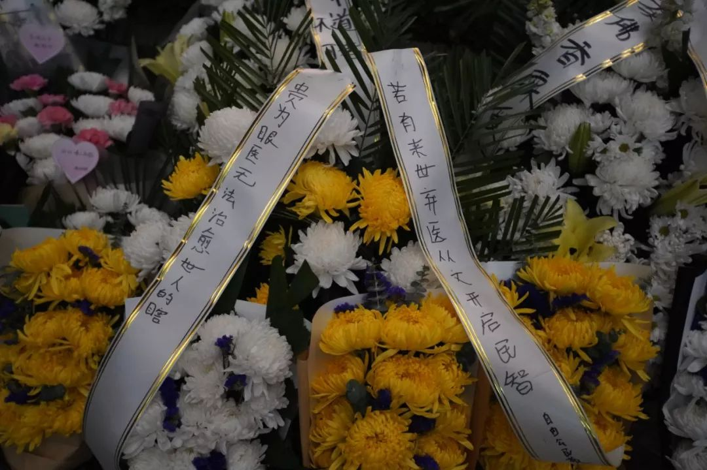
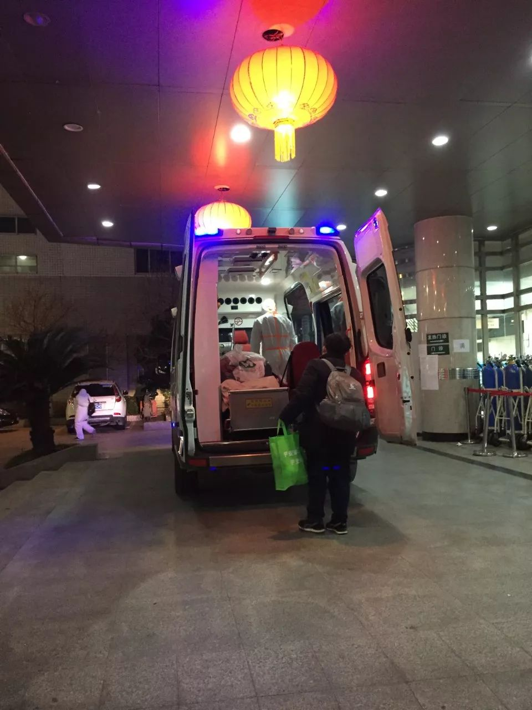
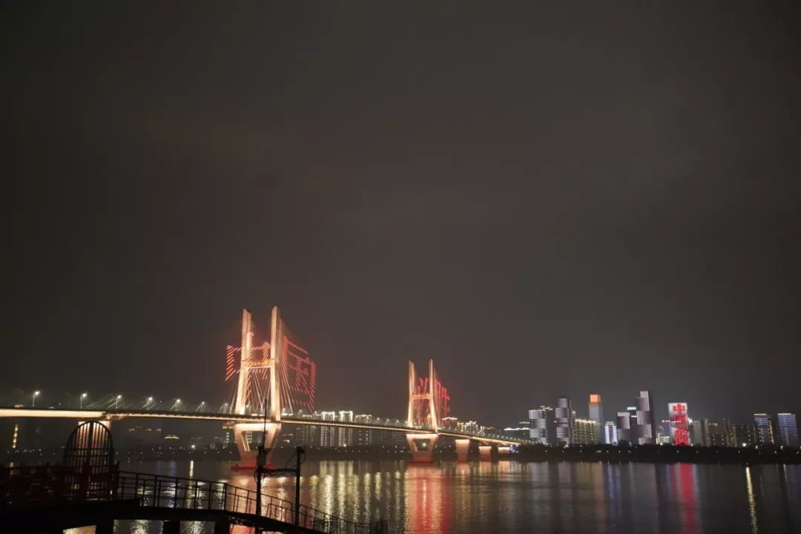
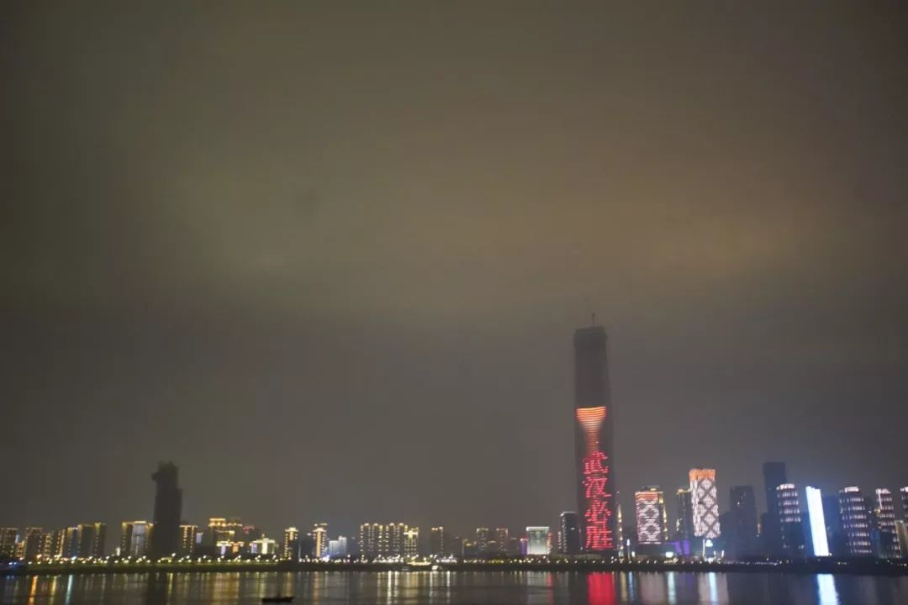
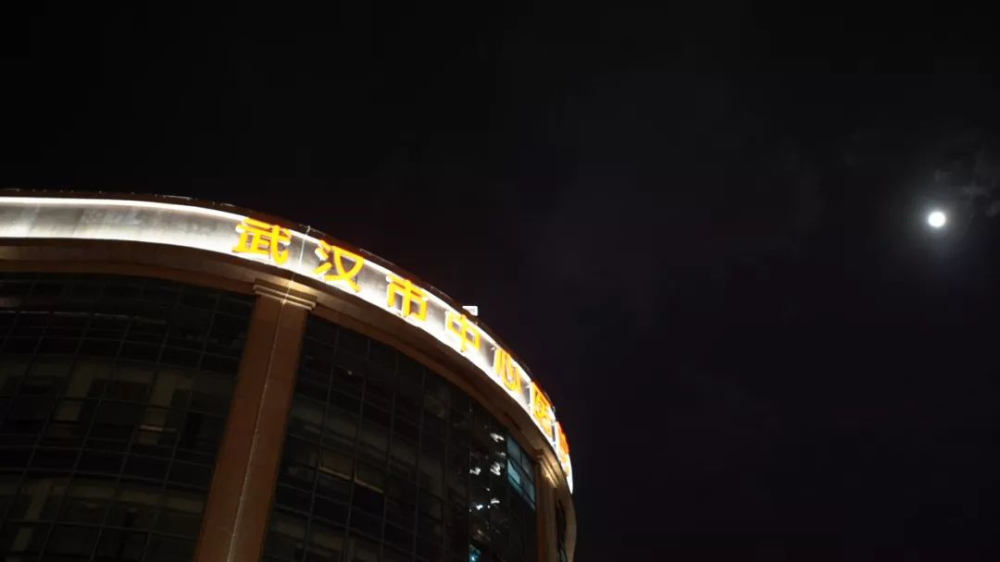

【口述】驰援武汉的上海货车司机：7桶泡面伴我送物资｜疫中人②|界面新闻 · 中国
原文链接 备份链接 李克胜在武汉。图片来源：受访者供图 口述 | 李克胜 整理 | 汪畅 44岁的上海货车司机李克胜，义务承揽运送医疗物资前往武汉的工作，带着7桶泡面，独自踏上千里之路。 返沪后，他马不停蹄，再次踏上赴汉之旅。 他曾接到妻 …
早上睁开眼，下意识摸床边的温度计。36.1度，谢谢命运之神，我还可以再记录一天。
到武汉十日，我从无所畏惧到开始迷信万物，本命年的红内裤也穿上了。倒不是怕成为那不幸的几十万分之一，只是害怕牺牲无意义，这场灾难又少了一个记住的人。
前天元宵节，李文亮医生离开的第二天，我去了中心医院一趟。
小花园的墙上贴着李医生的黑白照，花圈花篮堆了一地，有人写“英雄一路走好”，有人写“你不是英雄，你只是个挺身而出的普通人”，有人写“下辈子弃医从文开民智吧”，也有人写“该死的人怎么还没死”。


花圈和花篮
天色暗了，有陌生男人给鲜花一一点上小灯。他说受网友所托来凭吊，点不了蜡烛，点个小灯也是好的。小花园通着中心医院的住院大楼，几个全身防护服的医护人员走出来，立住了，用手机拍照。
我往外走，急诊室门口依然有许多拿着CT打电话的人，还有在路边发呆的人。汉口殡仪馆的车和救护车擦肩而过，围栏边放了一束百合，和几个吃完的泡面桶。
医院的急诊，去一回便要难过一回。
见惯生离死别的ICU护士朋友说，“这就是人间炼狱”。生气愤怒的，不是死亡这件事情本身。而是那么多人，明明有生的机会，明明有一线希望，但没有办法和资源去努力。

救护车上的重症病人
剩余座位还要载两个病人，没有车无法随行的家属
灾难面前，人性的黑洞无限放大。见了太多的无情和无用，归根结底，是无能为力。生命和尊严不值钱，唯有床位值钱。
是谁的错？
“武汉坚强”对于城里经历切身之痛的人来说，有何不食肉糜的苦感。


中国必胜，武汉加油
这十日里，我看过五具尸体从我面前抬走。
年纪轻轻和我一样的女孩，封城前还在置办年货，打算年后和家人坦白男朋友，准备结婚的女孩，一夜之间家破人亡。明明自己也是快要倒下的人，硬是一口气撑着，“我不敢拿我妈的命开玩笑”。
每次看到“武汉加油”，我都很生气，这是比赛吗，打气有用吗？这他妈都是一条一条人命啊。
在第一个采访对象死亡之后，我一度不想拍了。
我不知道自己的工作有什么意义，拍纪录片这个事，可能还不如我在急诊给无人照看的爹爹们打杯热水订个饭，给路上没有口罩的拾荒大爷递口罩更让我开心一点。
导师说那没有办法，这件事总得有人来做。无人记住灾难，那怎么行。

所有科室都改成了感染科
说点好消息吧。
借住的酒店进驻了医疗队，我在吃了十天泡面之后终于吃上饭了。因为自己动手剪的狗啃短发，常常在电梯里被当作小护士。昨天下楼的时候被一个带队模样的医生鼓励：“多穿点、多吃点才有力气”。
封城的武汉近似于公民社会，每个人对陌生人无条件的信任。
这十日里我接受了太多来自陌生人的帮助和善意，那天想帮重症的采访对象搞点医用氧气，拿着氧气袋跑了好几家医院都吃了闭门羹，最后碰到一个护士，听我提到叫不到救护车，马上拉我到一边的留观室把门带上，“我帮你打氧气，你别让别人看见了。”

武汉十五元宵的月亮
这是一座充满善意的城。
武汉人民遭大难了。
他们本不应该承受这一切。
「相关文章」
「征集活动」
无论你是医护人员、患者，还是普通人
都可以点击“阅读原文”和我们联系
分享你与疫情的故事

「联系我们」
欢迎关心武汉疫情和“云林街十七号”的你
扫码进群入读者群

点击“阅读原文”，报名参与“故事征集”。
原文链接 备份链接 李克胜在武汉。图片来源：受访者供图 口述 | 李克胜 整理 | 汪畅 44岁的上海货车司机李克胜，义务承揽运送医疗物资前往武汉的工作，带着7桶泡面，独自踏上千里之路。 返沪后，他马不停蹄，再次踏上赴汉之旅。 他曾接到妻 …
原文链接 备份链接 疫情刚开始的时候，我们还没想到形势会发展成后来那样，那时我们只是对湖北籍的朋友致以了常规关心，回去了吗？家里没事吧？注意安全。年后见。 但日子翻得一天比一天艰难。中国的中心省份被完全封锁，千家万户亲朋挚友隔绝禁足，身在 …
原文链接 备份链接 二月的武汉城内，感染肺炎的患者与家属四处寻找床位。亲朋好友们在家为他们祈祷，同时精神高度警惕着病毒。他们在生死时速的这一头。另一头，是坐在120救护车里，24小时轮班，在武汉空荡的大街上飞奔的救护车医生们。 文 | 熊 …
原文链接 备份链接 看到“7例肺炎”的新闻后，小熊赶回了武汉。但妈妈还是病倒了。目前居家隔离的妈妈病情有所好转，可小熊还是一刻不敢放松。 文 | 吴美芬 1月1日，家住武汉的小熊在贵阳出差。这天他第一次听说了“新型肺炎”，新闻里说武汉有7 …
原文链接 备份链接 当社会规则的制定者不作为的时候，普通人别无选择，“幸运”的人躲过一劫，只从人性百态里掠了个影；而“不幸”的人却只能自面生死。武汉肺炎等事情不使人绝望，真正使人绝望的是这些看似由于客观因素所导致的不幸里面，大多数是本可以 …